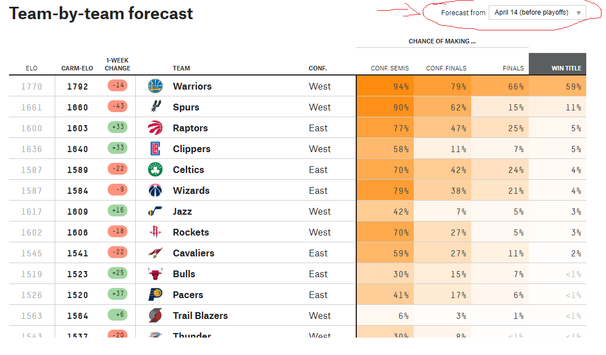

Часть 4 Slow way: RSelenium
Бывают ситуации, когда разобраться в том, что “под капотом” веб-страницы не хватает времени или навыка, а данные надо скачать как можно скорее. В таких случаях спасает Selenium – ПО, изначально придуманное для автоматизированного тестирования веб-приложений. Селениум позволяет автоматизировать то, что пользователь делает мышкой и клавиатурой на сайте: нажатия на те или иные кнопки, ввод текста в формы, паузы, и так далее. При этом в любой момент мы можем сохранить то, что видим на экране, в форме HTML-файла, и работать с ним дальше средствами rvest.
4.1 5-38 NBA predictions
На сайте fivethirtyeight.com есть раздел, посвященный прогнозам баскетбольных матчей. Однажды на StackOverflow пожаловались на то, что rvest ничего не грузит, а надо скачать прогнозы за 14 апреля. У меня получилось это сделать с помощью RSelenium, и я сейчас расскажу как.
Нужно выцепить эту табличку:

Для этого расчехляем RSelenium. После загрузки библиотек и создания переменной с URL инициализируем сам движок, который будет эмулировать браузер. Для этого нужно выбрать браузер: можно использовать известные Chrome, Firefox и другие, а можно использовать браузерозаменитель phantom.js (это как будто компьютер без монитора).
Некоторое время Селениум будет подгружать браузерный движок, а потом запустит окошко.
library(RSelenium)
library(rvest)
url_nba <- "https://projects.fivethirtyeight.com/2017-nba-predictions/"
# Заводим движок!
rD <- rsDriver(port=4444L,browser="firefox")
remDr <- rD$client
# Переходим на нашу страницу
remDr$navigate(url_nba)
message("NAVIGATE")
# Нажимаем на бокс и находим десятую опцию (April 14 before playoffs)
# XPath был найдет с помощью всё того же просмотрщика исходного кода
webElem <- remDr$findElement(using = 'xpath', value = "//*[@id='forecast-selector']/div[2]/select/option[10]")
message("webelem")
# Говорим браузеру - нажми на это.
webElem$clickElement()
message("click")
# После нажатия сохраняем код страницы.
webpage <- remDr$getPageSource()[[1]]
# Закрываем браузер и останавливаем RSelenium
remDr$close()
rD[["server"]]$stop()
# Теперь передаём наше хозяйство в rvest и извлекаем таблицу
webpage_nba <- read_html(webpage) %>% html_table(fill = TRUE)
# rvest извлёк три разные таблицы из страницы. Нам нужна последняя:
df <- webpage_nba[[3]]
# Приводим датафрейм в порядок
names(df) <- df[3,]
df <- tail(df,-3)
df <- head(df,-4)
df <- df[ , -which(names(df) == "NA")]
df## ELO Carm-ELO 1-Week Change Team Conf. Conf. Semis Conf. Finals Finals Win Title
## 4 1770 1792 -14 Warriors West 94% 79% 66% 59%
## 5 1661 1660 -43 Spurs West 90% 62% 15% 11%
## 6 1600 1603 +33 Raptors East 77% 47% 25% 5%
## 7 1636 1640 +33 Clippers West 58% 11% 7% 5%
## 8 1587 1589 -22 Celtics East 70% 42% 24% 4%
## 9 1587 1584 -9 Wizards East 79% 38% 21% 4%
## 10 1617 1609 +16 Jazz West 42% 7% 5% 3%
## 11 1602 1606 -18 Rockets West 70% 27% 5% 3%
## 12 1545 1541 -22 Cavaliers East 59% 27% 11% 2%
## 13 1519 1523 +25 Bulls East 30% 15% 7% <1%
## 14 1526 1520 +37 Pacers East 41% 17% 6% <1%
## 15 1563 1564 +6 Trail Blazers West 6% 3% 1% <1%
## 16 1543 1537 -20 Thunder West 30% 8% <1% <1%
## 17 1502 1502 -3 Bucks East 23% 9% 3% <1%
## 18 1479 1469 +46 Hawks East 21% 6% 2% <1%
## 19 1482 1480 -41 Grizzlies West 10% 3% <1% <1%
## 20 1569 1555 +32 Heat East — — — —
## 21 1552 1533 +27 Nuggets West — — — —
## 22 1482 1489 -12 Pelicans West — — — —
## 23 1463 1472 -18 Timberwolves West — — — —
## 24 1463 1462 -40 Hornets East — — — —
## 25 1441 1436 +22 Pistons East — — — —
## 26 1420 1421 -20 Mavericks West — — — —
## 27 1393 1395 -2 Kings West — — — —
## 28 1374 1379 -13 Knicks East — — — —
## 29 1367 1370 +47 Lakers West — — — —
## 30 1372 1370 -14 Nets East — — — —
## 31 1352 1355 -9 Magic East — — — —
## 32 1338 1348 -29 76ers East — — — —
## 33 1340 1337 +26 Suns West — — — —